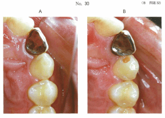
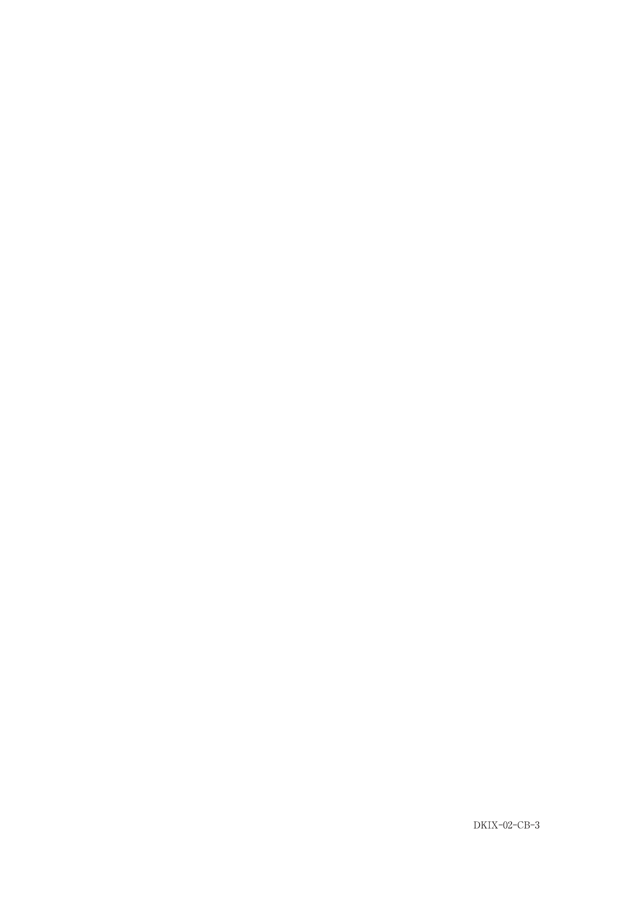

光重合
光重合方式の原理
コンポジットレジンの光重合は、可視光線（青色光）を利用してラジカル重合反応を起こす。
光重合の構成要素
| 成分 | 役割 | 物質名 |
|---|---|---|
| 光増感剤 | 重合開始剤 | カンファーキノン |
| 還元剤 | 重合促進剤 | 第3級アミン（ジメチルアミノエチルメタクリレート） |
| 光源 | ラジカル発生 | 可視光線（青色光、470nm付近がピーク） |
重合反応機序
カンファーキノンが470nm付近の可視光を吸収 → 励起 → フリーラジカル発生 → 重合開始 → レジンモノマー高分子化 → 重合・硬化
コントラクションギャップ
窩洞に充填されたCRは重合時に収縮し、重合収縮力＞接着力の条件になると、歯質/レジン間に隙間が生じる。これをコントラクションギャップという。
光重合型CRは化学重合型CRよりコントラクションギャップを生じやすい
C値（C-factor）
重合収縮応力はC値（C-factor）によって大きな影響を受ける。
C値 = 接着面積 / 非接着面積（c-value: configuration value）
| 窩洞 | C値 | 重合収縮応力の影響 |
|---|---|---|
| 1級窩洞（咬合面） | 大（5.0） | 受けやすい |
| 5級窩洞（歯頸部） | 大（5.0） | 受けやすい |
| 2級窩洞 | 中 | 中程度 |
| 4級窩洞（切縁） | 小（0.2） | 受けにくい |
C値が大きい＝接着面積が大きい＝レジンが広い面積の窩壁と接着している → 収縮時の応力が大きくなる
重合収縮応力の緩和法
コントラクションギャップの予防法
- 分割積層充填（レイヤリング）：1回の充填量を少なくして段階的に重合
- フロアブルCR（低粘性レジン）の併用：初層に使用
- 修復当日の研磨回避：24時間以上経過後に研磨
- 歯質透過光による重合：窩壁側から光照射
- 重合収縮は光照射される方向に向かって収縮する
- 3級窩洞：唇側壁または舌側壁を介して光照射
- 歯質透過光で窩洞内レジンを重合 → 窩壁面のギャップ発生を抑制
ホワイトマージン
コントラクションギャップにより窩縁部に生じる白濁した辺縁漏洩。審美不良や二次齲蝕の原因となる。
ホワイトマージンの予防
- ベベル付与：窩縁にエナメル質のベベルを付与し、接着面積を増大
- 分割積層填塞：重合収縮応力を緩和
ホワイトマージンへの対応（発生後）
レジンインプレグネーションテクニック：エッチング操作を経て、ボンディングレジンを浸透硬化させて封鎖する
レジンインプレグネーションはエナメル質の微小亀裂やコントラクションギャップの封鎖にも有効
過去問
25歳の男性。上顎左側犬歯の一過性の冷水痛を主訴として来院した。コンポジットレジン修復を行うこととした。初診時の口腔内写真（別冊No.30A）と窩洞形成後の口腔内写真（別冊No.30B）とを別に示す。
コンポジットレジンの重合収縮応力を緩和するために有効なのはどれか。2つ選べ。

b ベベルの付与
c 舌側面からの圧接
d 唇側からの光照射
e ポリエステル製ストリップスの使用
【解説】写真から3級窩洞（隣接面）であることがわかる。分割積層充填は1回の重合量を減らし収縮応力を緩和する。唇側からの光照射は歯質透過光によりレジンを窩壁方向に収縮させ、コントラクションギャップを防止する。ベベル付与は接着面積増大のためで収縮応力緩和ではない。
コンポジットレジン修復でホワイトマージン発生の予防に有効なのはどれか。2つ選べ。
b ベベル付与
c 分割積層填塞
d セレクティブエッチング
e レジンインプレグネーション
【解説】ホワイトマージンはコントラクションギャップによる辺縁漏洩。ベベル付与は接着面積を増大させ辺縁封鎖性を向上。分割積層填塞は重合収縮応力を緩和。即日研磨は禁忌（重合反応が完了していない）。レジンインプレグネーションは発生後の対応法で予防ではない。
59歳の男性。下顎右側第一大臼歯の冷水痛を主訴として来院した。歯髄電気診に生活反応を示した。初診時の口腔内写真（別冊No.3A）、窩洞形成終了後の口腔内写真（別冊No.3B）、接着処理を行った後の修復操作中の口腔内写真（別冊No.3C）及び修復操作後の口腔内写真（別冊No.3D）を別に示す。
この充填法で得られる効果はどれか。1つ選べ。


b 透明性の向上
c 象牙質の即時封鎖
d 遊離エナメル質の保護
e コントラクションギャップの防止
【解説】写真から分割積層充填を行っていることがわかる。分割積層充填は1回の充填量を少なくして段階的に重合することで、重合収縮応力を緩和しコントラクションギャップの防止に有効である。